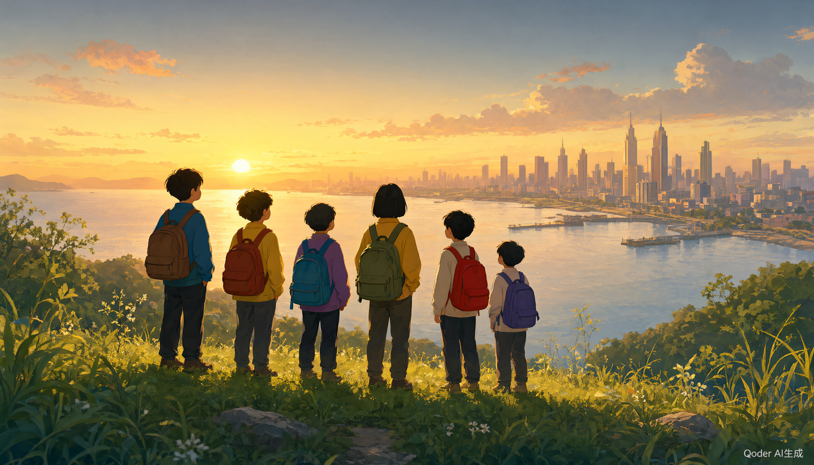

12 年来，30 个省的孩子们自己设计路线、自己管理预算、自己走向远方。这张地图记录他们走过的每一步——给捐赠人一份看得见的改变，给下一届孩子一份可以触摸的勇气。

点击省份或光点，查看该地点的项目与历届完成过程
这些故事，是给捐赠人最好的回信，也是给下一届孩子最好的邀请函。
数据来源：真爱梦想公益基金会公开报道与年报（截至 2025 年，部分为演示示意数据）。
每一份捐赠，都会变成一节梦想课、一张车票、一次看世界的机会。你的支持，正在被这些时间线记录。
如果你是梦想中心学校的学生，欢迎加入《去远方》课程，和小伙伴一起设计你们自己的旅行方案。